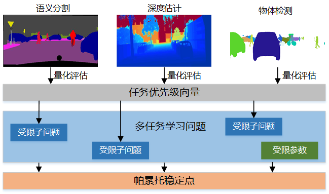
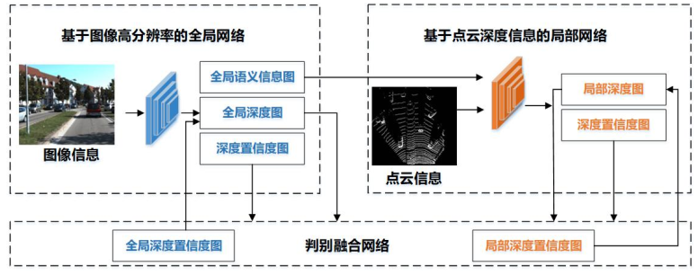
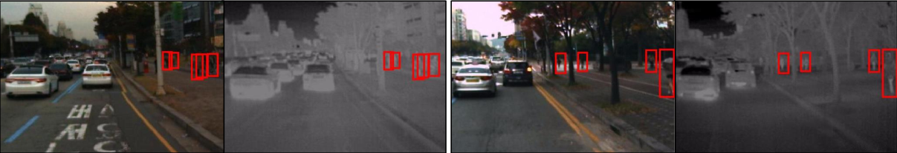

QIAN Yeqiang 钱烨强
I am currently a postdoctoral fellow at the University of MichiganShanghai Jiao Tong University Joint Institute at Shanghai Jiao Tong University. I received a Ph.D. degree in control science and engineering from Shanghai Jiao Tong University, Shanghai, China, in 2020..
Email /
Google Scholar
Research Directions
Autonomous driving data scarcity and solutions, representative work: J1, J3, J5, J6, C1, C2, C4.
Multi-sensor fusion and multi-task learning methods, representative work: J2, J4, J7, J8, C3.
Publications
Journal Papers:
- Survey on Fish-Eye Cameras and Their Applications in Intelligent Vehicles
Qian Y, Yang M and Dolan J M
IEEE Transactions on Intelligent Transportation Systems 2022 | paper | code
- Gated-Residual Block for Semantic Segmentation Using RGB-D Data
Qian Y, Deng L, Li T, Wang C and Yang M
IEEE Transactions on Intelligent Transportation Systems 2021 | paper
- Adversarial Training-Based Hard Example Mining for Pedestrian Detection in Fish-Eye Images
Qian Y, Yang M, Li H, Wang C and Wang B
IEEE Transactions on Intelligent Transportation Systems 2020 | paper
- DLT-Net: Joint Detection of Drivable Areas, Lane Lines, and Traffic Objects
Qian Y, Dolan J M and Yang M
IEEE Transactions on Intelligent Transportation Systems 2019 | paper
- Oriented Spatial Transformer Network for Pedestrian Detection Using Fish-Eye Camera
Qian Y, Yang M, Zhao X, Wang C and Wang B
IEEE Transactions on Multimedia 2019 | paper
- Hy-Seg: A Hybrid Method for Ground Segmentation Using Point Clouds
Qian Y, Wang X, Chen Z, Wang C and Yang M
IEEE Transactions on Intelligent Vehicles 2021 | paper
- Pedestrian Graph+: A Fast Pedestrian Crossing Prediction Model Based on Graph Convolutional Networks
Cadena P R G, Qian Y, Wang C and Yang M
IEEE Transactions on Intelligent Transportation Systems 2022 | paper
- Spade-E2vid: Spatially-Adaptive Denormalization for Event-Based Video Reconstruction
Cadena P R G, Qian Y, Wang C and Yang M
IEEE Transactions on Image Processing 2021 | paper
- Monocular Pedestrian Orientation Estimation Based on Deep 2D-3D Feedforward
Zhao C, Qian Y and Yang M
Pattern Recognition 2020 | paper
- G2P: A New Descriptor for Pedestrian Detection
Yang M, Qian Y, Xue L, Li H, Deng L and Wang C
Neural Computing and Applications 2020 | paper
- Map-Enhanced Ego-Lane Detection in the Missing Feature Scenarios
Wang X, Qian Y, Wang C and Yang M
IEEE Access 2020 | paper
- 基于自动修补策略的网络剪枝
苏启航, 钱烨强, 袁伟, 杨明, 王春香
模式识别与人工智能 2022 | paper
- Neutral Cross-Entropy Loss Based Unsupervised Domain Adaptation for Semantic Segmentation
Xu H, Yang M, Deng L, Qian Y and Wang C
IEEE Transactions on Image Processing 2022 | paper
Conference Papers:
- Pedestrian Feature Generation in Fish-Eye Images via Adversary
Qian Y, Yang M, Wang C and Wang B
IEEE International Conference on Robotics and Automation (ICRA) 2018 | paper | Oral Presentation
- Self-Adapting Part-Based Pedestrian Detection Using a Fish-Eye Camera
Qian Y, Yang M, Wang C and Wang B
IEEE Intelligent Vehicles Symposium (IV) 2017 | paper | Oral Presentation
- Learning Bi-directional Adaptive Attention Gates for Multispectral Pedestrian Detection
Yang X, Qian Y, Zhu H, Wang C and Yang M
IEEE International Conference on Robotics and Automation (ICRA) 2022 | paper | code
- A Multi-Camera Vehicle Tracking System Based on City-Scale Vehicle Re-ID and Spatial-Temporal Information
Wu M, Qian Y, Wang C and Yang M
IEEE/CVF Conference on Computer Vision and Pattern Recognition Workshops (CVPRW) 2021 | paper
- Pedestrian Graph: Pedestrian Crossing Prediction Based on 2D Pose Estimation and Graph Convolutional Networks
Cadena P R G, Yang M, Qian Y and Wang C
IEEE Intelligent Transportation Systems Conference (ITSC) 2019 | paper
- CNN based Semantic Segmentation for Urban Traffic Scenes Using Fisheye Camera
Deng L, Yang M, Qian Y, Wang C and Wang B
IEEE Intelligent Vehicles Symposium (IV) 2017 | paper
Recent Projects
智能驾驶环境感知的多任务学习方法研究

国家自然科学基金委员会，青年科学基金项目(62103261)，2022.01-2024.12.
面向无人驾驶3D目标检测的多源异构数据融合方法研究

中国博士后基金会，面上项目(2020M681301)，2021.01-2022.12.
基于红外与可视图像融合的区域警戒算法研究

军委装备发展部，重点实验室基金项目(6142414190203)，2019.12-2021.12.
Awards
2021, 第一届全国博士后创新创业大赛银奖
2020, 上海市超级博士后激励资助计划
2020, 上海市自动化学会最佳博士学位论文
2020, 上海市技术发明一等奖（团队成员）
2020, Journal of Shanghai Jiao Tong University (Science)}客座编辑
2020, 上海交通大学博士优秀毕业生
2019, 博士生国家奖学金
Talks
06/2022, Data Augmentation and Unsupervised Domain Adaptation Methods for Intelligent Vehicles.
Keynote Speaking in 2022 IEEE Intelligent Vehicles Symposium (IV).
05/2018, Pedestrian Feature Generation in Fish-Eye Images via Adversary.
Oral Presentation in 2018 IEEE International Conference on Robotics and Automation (ICRA).
06/2017, Self-Adapting Part-Based Pedestrian Detection Using a Fish-eye Camera.
Oral Presentation in 2017 IEEE Intelligent Vehicles Symposium (IV).
Patents
一种礼让行人预警方法及预警系统.
杨明, , 罗铨，王春香，王冰。专利号: ZL201810363236.X。